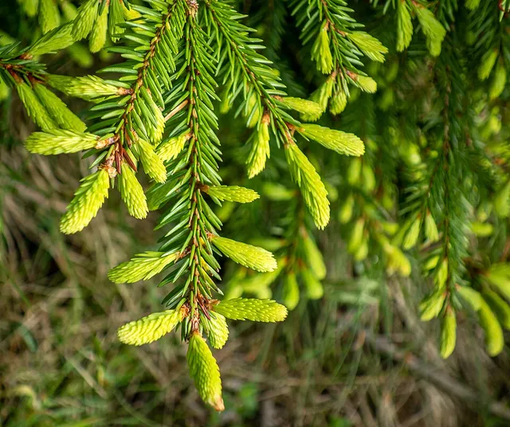

Spruce tips
Spruce tips is a wild green you can forage from May to June in Northeast, Midwest, Rocky Mountains, Pacific Northwest and Alaska. Bright green new growth bursting out of brown papery casings at branch tips in late spring. Citrus-resin flavour.

When is spruce tips in season in the United States?
Spruce tips is usually in season May to June. Timing shifts with weather, latitude and altitude.
Where does spruce tips grow in the United States?
Spruce tips grows in Alaska, Colorado, Connecticut, Delaware, District of Columbia, Idaho, Illinois, Indiana, Iowa, Kentucky, Maine, Maryland, Massachusetts, Michigan, Minnesota, Missouri, Montana, New Hampshire, New Jersey, New York, Ohio, Oregon, Pennsylvania, Rhode Island, Utah, Vermont, Virginia, Washington, West Virginia, Wisconsin, Wyoming. Regions: Northeast, Midwest, Rocky Mountains, Pacific Northwest, Alaska.
How do you recognise spruce tips?
Bright green new growth bursting out of brown papery casings at branch tips in late spring. Citrus-resin flavour.
How do you harvest spruce tips?
Pick the bright new tips once the brown papery caps fall off, a few from each branch, spread across many trees.
How do you eat spruce tips?
Spruce tip syrup, salt, beer or shortbread.
How do you store spruce tips?
Freeze, or make syrup and salt.
What is spruce tips good for?
Vitamin C.
What can you cook with spruce tips?
- Spruce tip soda: Spruce tip syrup topped with soda water and lime.